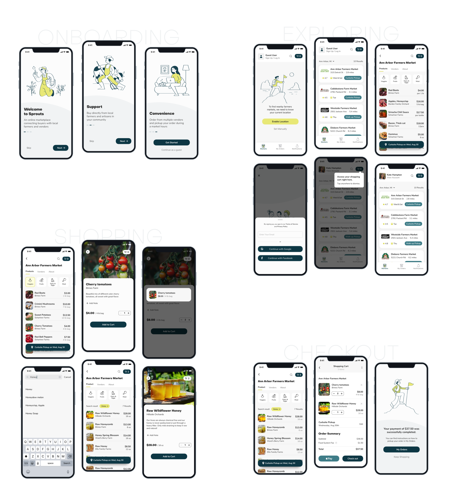

In an increasingly digital world, more and more consumers are looking for online ways to get locally sourced produce they normally find at farmer’s markets. Sprouts helps consumers find near by farmers markets and choose from an assortment of fresh produce without having to leave a house.
E-commerce app
Student project
August 2020 - 2.5 weeks
Logo Design
Brand Guidelines
User FLow Diagram
Visual Design
User Testing
Responsive Design
Designing a brand style guide takes the heart and soul of the brand — its mission, vision, and values. It also helps everyone to know how to communicate with your brand.
Designing a task flow diagram to outline each step a user takes helps create an intuitive interface and enhance the ease of user's movement through the interface.
After sketching low-fidelity wireframes using pen and paper, I transformed these sketches into mid-fidelity wireframes to define specific elements and give more accurate depictions of the interface layout. To clarify the features of the interface, I put together high-fidelity wireframes giving a better idea of what UI elements might look like.
Adding visual design to high-fidelity wireframes helps test specific scenarios during user testing.
To gain relevant insights from user testing, I've created specific scenarios for users to follow. Based on the results, I was able to identify frictions and make adjustments accordingly.
After evaluating the user's feedback and prioritizing the most common issues, I implemented changes to improve the usability of the app.
The pop-up window confused some of the participants, and after it disappeared, some participants weren't sure if they're already added items to a cart.
The pop-up window stays visible and provides clear feedback for the user by letting the user know how many items are in a cart.
The floating element on the bottom of the screen looked like a button and confused some of the participants.
The user can now have a clear understanding of where to access the pick-up schedule.